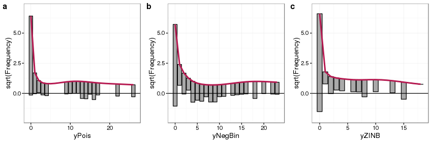
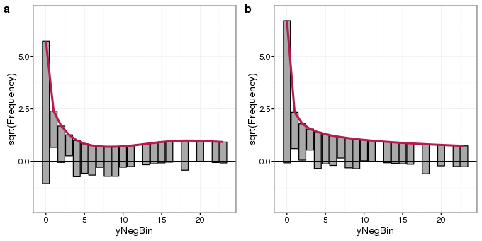
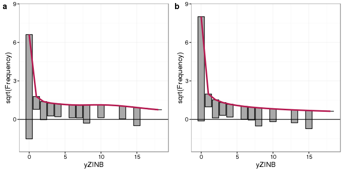
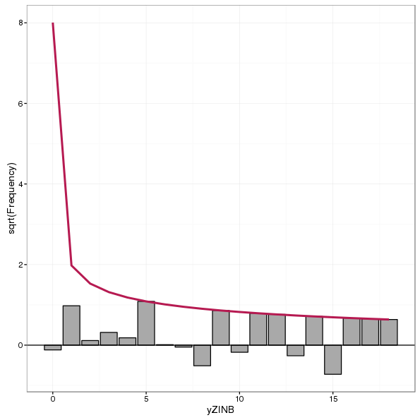
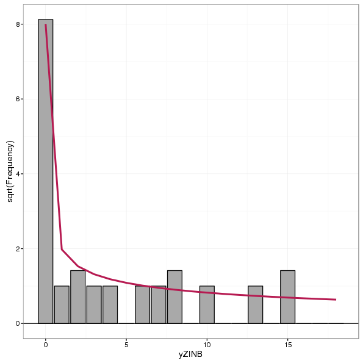
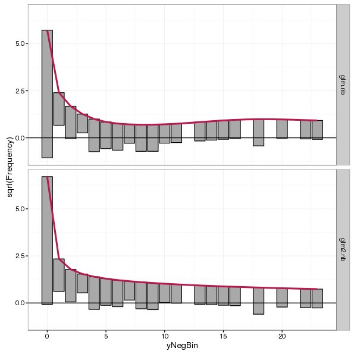

Rootograms
a new way to assess count models
Posted in
Tagged
counts Poisson negative binomial rootogram model evaluation GLM Coenoecliner models ggplot
Blogroll
Assessing the fit of a count regression model is not necessarily a straightforward enterprise; often we just look at residuals, which invariably contain patterns of some form due to the discrete nature of the observations, or we plot observed versus fitted values as a scatter plot. Recently, while perusing the latest statistics offerings on ArXiv I came across Kleiber and Zeileis (2016) who propose the rootogram as an improved approach to the assessment of fit of a count regression model. The paper is illustrated using R and the authors’ countreg package (currently on R-Forge only). Here, I thought I’d take a quick look at the rootogram with some simulated species abundance data.
Start by simulating some data to work with. Here I use my coenocliner package, and simulate three data sets, each of which uses the same environmental gradient, but with counts drawn from the following distributions
- Poisson
- Negative binomial
- Zero-inflated negative binomial
To follow along here you’ll need the latest version of coenocliner from CRAN (>= 0.2-2) as a bit of a bug entered into my code when changing between parameterizations of the negative binomial.
Load coenocliner and set up
library("coenocliner")
## parameters for simulating
set.seed(1)
locs <- runif(100, min = 1, max = 10) # environmental locations
A0 <- 90 # maximal abundance
mu <- 3 # position on gradient of optima
alpha <- 1.5 # parameter of beta response
gamma <- 4 # parameter of beta response
r <- 6 # range on gradient species is present
pars <- list(m = mu, r = r, alpha = alpha, gamma = gamma, A0 = A0)
nb.alpha <- 1.5 # overdispersion parameter 1/theta
zprobs <- 0.3 # prob(y == 0) in binomial modelNow we can simulate counts for the 100 locations along the gradient for each of the three count models
pois <- coenocline(locs, responseModel = "beta", params = pars, countModel = "poisson")
nb <- coenocline(locs, responseModel = "beta", params = pars, countModel = "negbin",
countParams = list(alpha = nb.alpha))
zinb <- coenocline(locs, responseModel = "beta", params = pars, countModel = "ZINB",
countParams = list(alpha = nb.alpha, zprobs = zprobs))and combine them into a data frame with the gradient locations
df <- setNames(cbind.data.frame(locs, pois, nb, zinb),
c("x", "yPois", "yNegBin", "yZINB"))To each of these I’m going to fit a Poisson GLM to show how rootograms can facilitate model evaluation where we know what the underlying model is so we can see what might happen when the wrong model, in this case a Poisson GLM, is fitted to data
glm.pois <- glm(yPois ~ poly(x, 2), data = df, family = poisson)
glm.nb <- glm(yNegBin ~ poly(x, 2), data = df, family = poisson)
glm.zinb <- glm(yZINB ~ poly(x, 2), data = df, family = poisson)In each case, a Poisson GLM was fitted even though we knew that for yNegBin and yZINB that the data generating process was not the Poisson.1
Next, generate rootograms for each of these models. I start by loading the countreg package as well as ggplot2, as I’ll plot the rootograms using the latter rather than base graphics.
Load the countreg package and ggplot. If you don’t have countreg installed, install it from R Forge using install.packages("countreg", repos="http://R-Forge.R-project.org")
library("countreg")
library("ggplot2")Rootograms are calculated using the rootogram() function. You can provide the observed and expected (given the model) counts as arguments to rootogram() or, most usefully for our purposes, a fitted count model object from which the relevant values will be extracted. rootogram() knows about glm, gam, gamlss, hurdle, and zeroinfl objects at the time of writing.
Three different kinds of rootograms are discussed in the paper
- Standing,
- Hanging, and
- Suspended.
Kleiber and Zeileis (2016) recommend hanging or suspended rootograms, for reasons I’ll mention shortly. Which type of rootogram is produced is controlled via argument style. The final option I use below is plot = FALSE, which suppresses plotting of the rootogram as I want to do that later using ggplot.
Generate the three rootograms
root.pois <- rootogram(glm.pois, style = "hanging", plot = FALSE)
root.nb <- rootogram(glm.nb, style = "hanging", plot = FALSE)
root.zinb <- rootogram(glm.zinb, style = "hanging", plot = FALSE)and gather them into an object for plotting — notice I’m using the autoplot() method to generate ggplot2 plot objects, and adjusting the limits to make the plots comparable. The resulting figure is shown below the code
ylims <- ylim(-2, 7) # common scale for comparison
plot_grid(autoplot(root.pois) + ylims, autoplot(root.nb) + ylims,
autoplot(root.zinb) + ylims, ncol = 3, labels = "auto")
Looking first at panel a we see the main features of the rootogram:
- expected counts, given the model, are shown by the thick red line,
- observed counts are shown as bars, which in a hanging rootogram are show hanging from the red line of expected counts,
- on the x-axis we have the count bin, 0 count, 1 count, 2 count, etc,
- on the y-axis we have the square root of the observed or expected count — the square root transformation allows for departures from expectations to be seen even at small frequencies
- A reference line is drawn at a height of 0
Because this is a hanging rootogram, we can think of the rootogram as relating to the fitted counts — if a bar doesn’t reach the zero line then the model over predicts a particular count bin, and if the bar exceeds the zero line it under predicts.
For the Poisson GLM fitted to counts generated from a Poisson distribution (panel a) we see general good agreement between the expected and observed counts, with a small amount of under prediction of some counts between 10–20. For the Poisson GLM fitted to the data generated from a negative binomial distribution (panel b) we see a much poorer fit — the zero count is under predicted whilst some low counts are over predicted, and a large number of count bins are under predicted between 4 and 10 counts. Focusing on the bottom of the bars we see an undulating pattern with runs either above or below the zero reference line, highlighting a general lack of fit in the model.
The fit of the Poisson GLM to data generated using a ZINB also shows considerable model lack of fit; strong under prediction of the zero bin and over prediction of the 1 count bin, with perhaps some general over prediction across most bins.
It is useful to compare rootograms showing the fits for incorrect and correct models side by side. To that end next I fit a negative binomial GLM and a ZINB using the glm.nb() function from package MASS and the zeroinfl() function from package countreg respectively, and create the relevant rootograms
library("MASS")
glm2.nb <- glm.nb(yNegBin ~ poly(x, 2), data = df)
glm2.zinb <- zeroinfl(yZINB ~ poly(x, 2) | 1, data = df, dist = "negbin")
## create rootograms
root2.nb <- rootogram(glm2.nb, style = "hanging", plot = FALSE)
root2.zinb <- rootogram(glm2.zinb, style = "hanging", plot = FALSE)First, we look at the negative binomial data and compare rootograms of the Poisson and negative binomial model fits
plot_grid(autoplot(root.nb) + ylims, autoplot(root2.nb) + ylims, ncol = 2, labels = "auto")
The rootogram for the negative binomial GLM fit (panel b) shows much better agreement with the data than that of the Poisson fit (panel a). Departures from expected counts are much smaller and the zero-count bin is much better fitted. Some small deviations from the observed data remain but that is to be expected.
Next we compare rootograms for the fits of the Poisson GLM and ZINB model
ylims <- ylim(-2, 8.5)
plot_grid(autoplot(root.zinb) + ylims, autoplot(root2.zinb) + ylims, ncol = 2, labels = "auto")
The rootogram for the ZINB model (panel b) shows better agreement with the zero-count bin than the Poisson model (panel a), though fits for the remaining count bins are similar to one another in both models. In particular, the ZINB model is still over predicting single counts.
Suspended rootograms are also recommended by Kleiber and Zeileis (2016). These rootograms show the difference between observed and expected counts, with bars hanging from the zero-line rather than the expected count line. Therefore we can think of this rootogram as showing information about the model residuals rather than the fitted values of the hanging rootogram. A suspended rootogram is produced using style = "suspended" and an example, for the ZINB model, is shown below
autoplot(rootogram(glm2.zinb, style = "suspended", plot = FALSE))
Standing histograms are not recommended by Kleiber and Zeileis (2016) as they simply show the expected and observed counts and the user then has to compare the height of each bar with the expected curve for each bin. By tying the bars to the expected curve or zero reference line in hanging or suspended rootograms, the assessment of fit is made by comparison of deviations from the reference line rather than bin-by-bin comparison of observed and expected counts. A standing rootogram, for completeness, is shown below for the ZINB model
autoplot(rootogram(glm2.zinb, style = "standing", plot = FALSE))
A neat feature of the countreg package is that rootograms can be combined using the c() or cbind() methods, which makes plotting multiple rootograms much more simple than I showed above. For example, to compare the Poisson and negative binomial model fits to the negative binomial counts one could have used
autoplot(c(root.nb, root2.nb))
cbind()So, there we go; these are rootograms and they seem like a pretty useful tool for assessing fits of count models. I really recommend having a look at Kleiber and Zeileis (2016) as it contains much more discussion and illustration of the proposed rootograms than I could possibly include here. They also have a nice ecological example of data from an investigation into horseshoe crab mating plus two other examples. Their paper will shortly appear in the journal The American Statistician, although at the time of writing I don’t have citation details for that version of the paper.
References
References
Footnotes
I’m kind of glossing over the fact that a quadratic function of x is not really the true model here, which is a generalised beta response function. This kind of sets up a follow-up post using a GAM fit…↩︎
Social